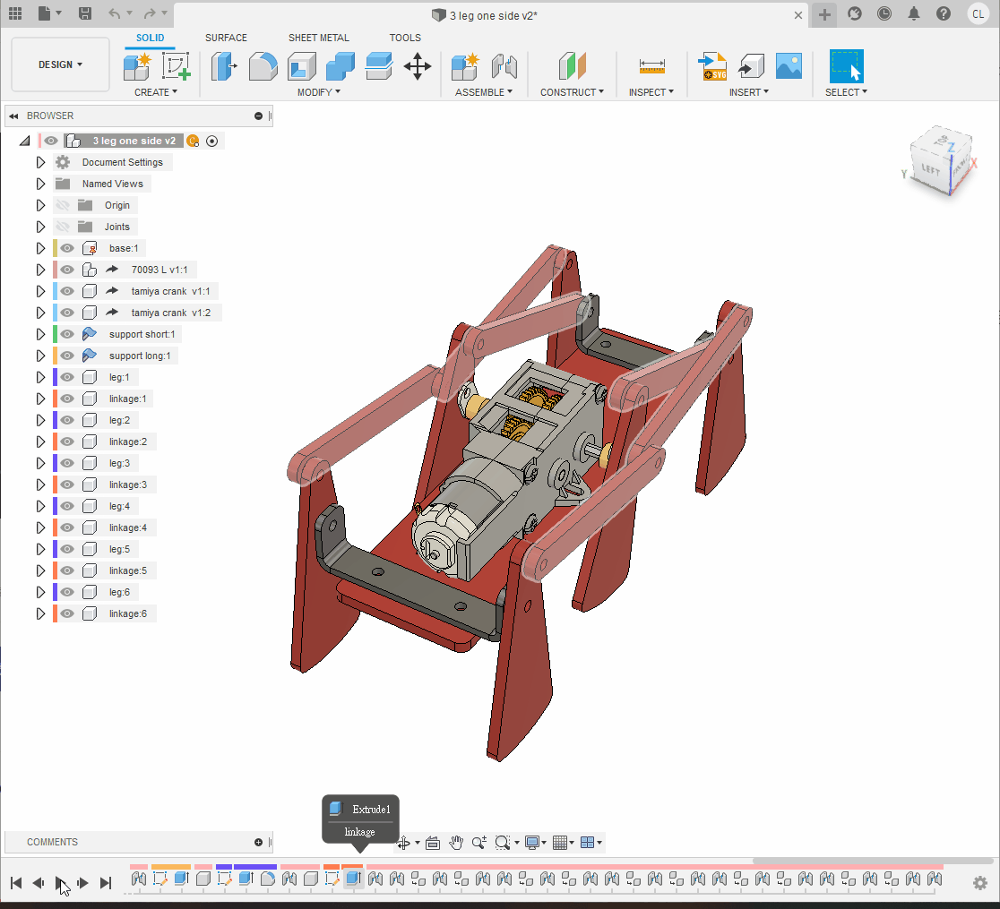
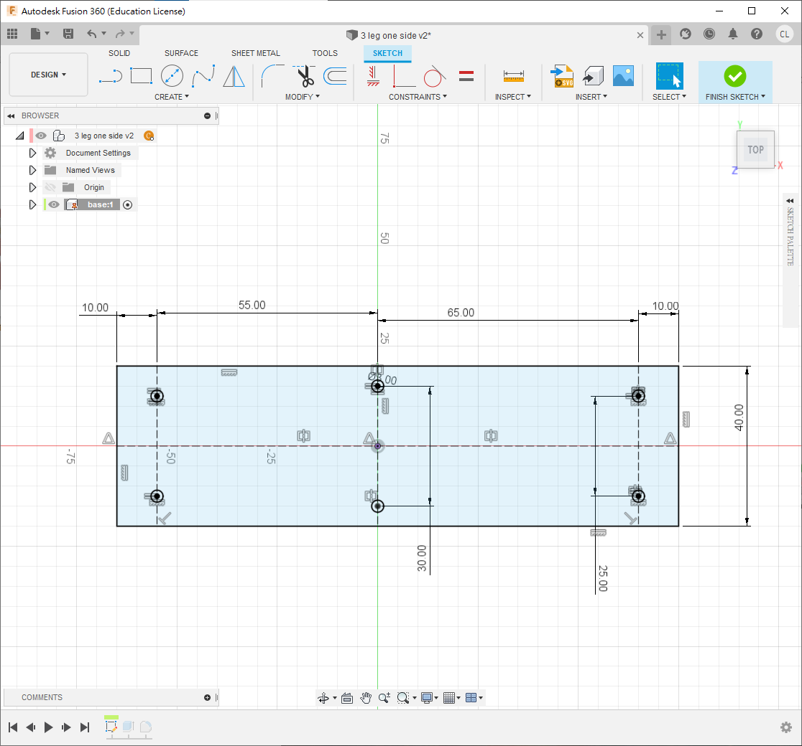
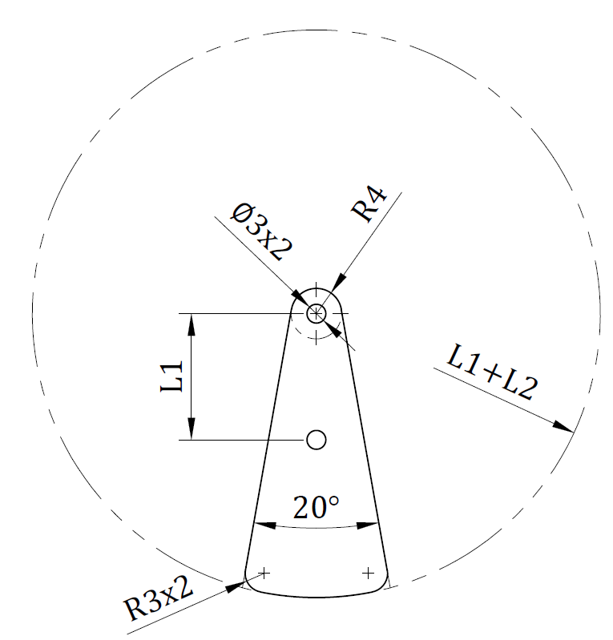
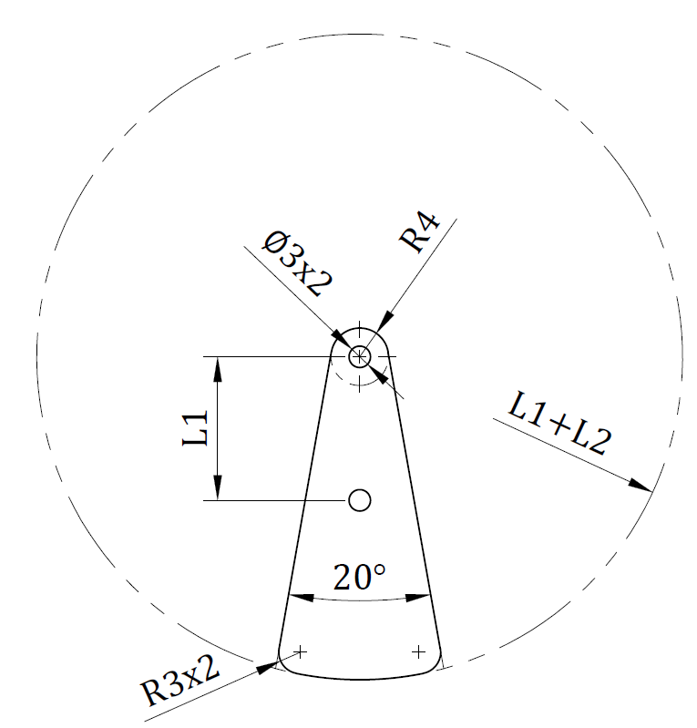
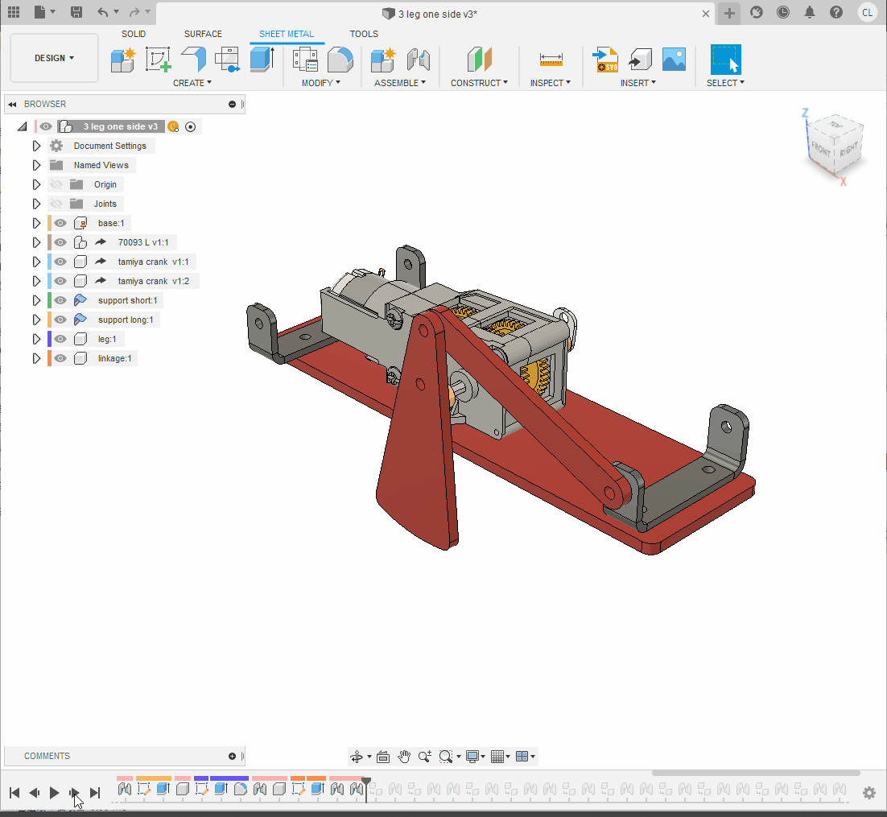
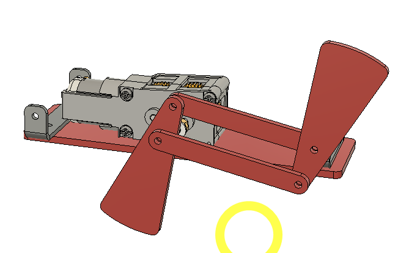
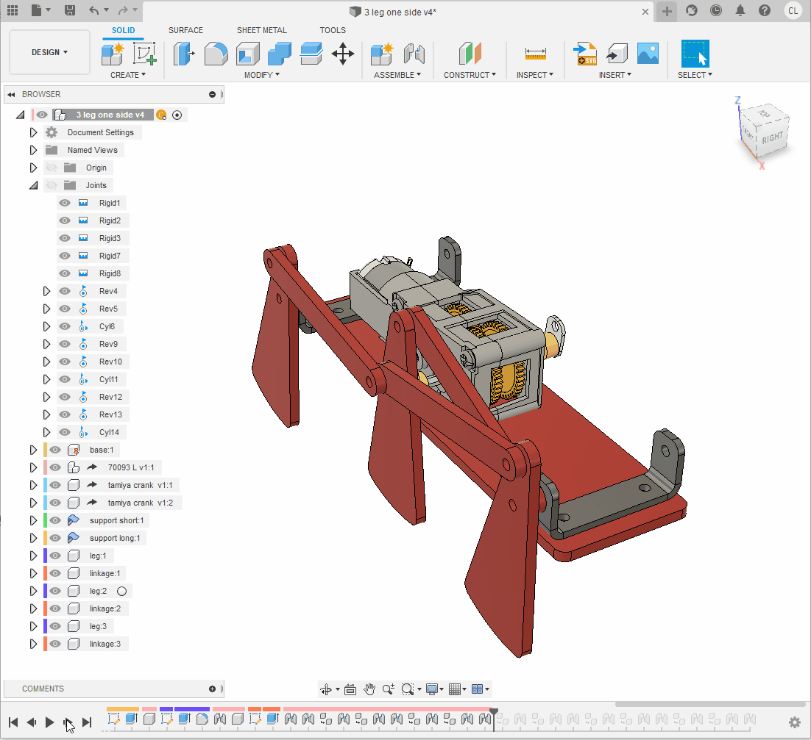

2.5 6 legs walking linkage robot
今次繪製的，進階版的四足連杆機械人，目的是希望大家熟習做用fusion360的joint功能

Step 1
- 💡首先開一個新檔, 只繪製一邊, 另一邊之後可以再開另一個檔, 用insert derive, 可避免分層後joint消失的問題
Step 2
- 開一個新的component叫base
- 記得小黑點按了進了activate
- 開一個new sketch
- 如圖尺寸繪製
- 用"s"搜尋"
change parameter", 開一個新的variable叫"thickness", 內容為3mm - 將sketch用
e擠出thickness厚度, 之後四邊fillet 3mm

Step 3
- 下一部用"
insert derive", derive一個70093 gearbox的step檔 - 在70093按右鍵, 找到rigid group
- 今次不是選擇全部, 按住ctrl鍵, 選擇除最長軸外的全部齒輪, 馬達與外殼
- 剩下的長軸則用revolving joint, 組合到外殼中
- 最後將長軸兩邊用
e增長/縮短至距離外殼10.5mm(兩邊都是10.5mm)


Step 4
- 用"
insert derive" derive一個tamiya crank的檔 - 在曲柄表面上開一個new sketch, 尺寸如下圖
- 用"e"將多餘部分刪走並fillet 3 mm
- 用"j"將曲柄組合到齒輪箱,今次使用rigid joint, 並在最外層component複製貼上組合多一份如圖
- 在component "base"按mouse右鍵, 選擇ground將其釘住
- 測試一下兩個曲柄是否同時轉動


Step 5
- 開一個新的sheet metal component叫"
support short"(或其他你喜歡的名字) - 在base的表面開一個新的sketch
- 用
p投影齒輪箱後方的孔投影, 並劃一條中線, 劃一個10mm寬的長方形如下圖 - 到sheet metal頁面，找到"
flange" icon, 或直接用"s"搜尋 - 將長方形用flange變成2mm厚鋁板(如果事前沒有選擇材料為2mm鋁板, 可以搜尋"sheet metal rules"更改)


- 繼續用
flange將鋁板兩邊摺高16mm, 選用outer faces和inside bend position - 在摺高的鋁板開一個new sketch, 劃一個3mm圓, 高度與齒輪箱的軸齊高
- 用
e將兩邊穿孔 - 最後fillet 4個角(2mm或3mm皆可)


Step 6
- 下一步, 開另一個新的sheet metal component叫"
support long" - 在base的表面開一個new sketch
- 這次的長方形要加長8mm, 寬一樣是10mm
- 跟著與step 5一樣, 用flange將長方形變成2mm厚鋁板
- 鋁板兩邊摺高16mm
- 在摺高的鋁板上繪畫一個3mm孔, 與齒輪箱的軸同高
- 兩邊穿孔再將4角fillet 3mm


Step 7
- 用"s"搜尋"
change parameter", 開幾個新的variable如圖 - 在最上層開一個新的standard component叫"
leg" - 暫時隱藏其他component, 在xz平面(或者你機械人的側面)開一個new sketch
- 跟據下圖尺寸繪劃
- 之後用"e"擠出
thickness的厚度, 腳的角位用ffillet 3mm
 



Step 8
- 將小黑點褪回最上層, 將其他隱藏的component重新顯示出來
- 用"j"將腳joint到曲柄的第2個孔
- offset z為1mm
- 選用revolve joint
💡今次不用像上次的walking linkage robot一樣開一個component去裝起全部的腳和連杆, 因為今次想做到
- 左右對稱, 左右都會動
- 之後另一邊會再derive去一個新的檔案, 所有joint會自動複製
- 想大家做多幾次joint去熟習

- 小黑點褪回最上層, 開一個new component
- 在xz平面(或機械人的側面)開一個new sketch
- 跟據下圖, 繪,劃一條linkage並用"e"擠出
thickness厚度


- 將linkage的一邊用"j" 組合到腳的後方
- 間距為1mm
- 類型選用revolve joint

- 接著將linkage的另一邊組合到鋁架的孔上
- 今次不用offset也可以
- 因為會選用cylindrical joint
💡記著四連杆組合的秘決為: 3個joints 中, 2個revolve joints 1個cylindrical joint, 次序可以隨意, 這樣就不用計算offset的距離和thickness的厚度


Step 9
- 確保小黑點退回最上層, 將leg和linkage複製一份, 依貼上面2個revolve joints + 1個cylindrical joint的做法, 將其組合成兩足連杆
- 記得每個連杆和腳之間要間隔1mm
- 嘗試一下轉動腳, 看看是否能模擬連杆行動
- 如果有"反臂"的情況如下圖, 貼可以用joint limit來解決(見下)

"反臂"解決方法:
- 由於較難用文字去描述, 我直接用影片去示範
- 值得注意, 影片中的角度不一定是絕對, 視乎你joint的時候零件先後可能會不同, 可以將joint顯示出來, 先觀察一下轉動時它的範圍
Step 10
- 跟著的步驟都是重覆上述
💡記著四連杆組合的秘決為: 3個joints 中, 2個revolve joints 1個cylindrical joint, 次序可以隨意, 這樣就不用計算offset的距離和thickness的厚度

Step 11
- 接著是做另外半邊的腳
- 之前已說過, 由於今次希望大家熟習用joint, 又因為要力求對稱, 所以今次要求大家右半邊都要joint一次'
- 跟之前一樣, 如果出現"反臂"的情況. 可以先將歷史褪行一步, 先調整一下joint的角度, 又或者直接用joint limits
- 完成後可以儲存

Step 12
- 開一個新的檔案, 名字可以隨意, 或跟隨用我的檔名都可以
- 用"insert derive" derive之前所劃的半邊機械人的檔案
- 將"base"先ground
- 這時你會發現所有的joint都會保留下來
- 將整個derive複製多一份, 用rigid joint將底板組合, 相距水平40mm (如果真正製作機械人, 則需要加膠板或鋁板將其連接)